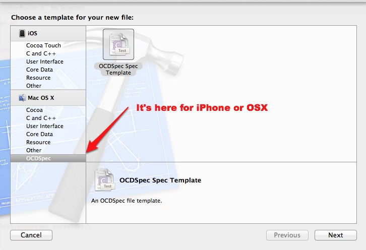

OCDSpec is a TDD/BDD framework inspired by RSpec and Jasmine. Unlike similar frameworks it does not depend on OCUnit, and has a silent command line runner for iPhone. It's goals are as follows:
This is taken out of OCDSpecExpectation - OCDSpec is tested in itself - and demonstrates your basic test. Let's walk through the code:
#import "OCDSpec/OCDSpec.h"Every test imports OCDSpec.h.
CONTEXT(OCDSpecExpectation)Each specification requires a context - the name of the context (in this case OCDSpecExpectation) must be unique.
__block MockObjectWithEqualsA variable that will be avalilable to all the descriptions in this context. OCDSpec uses Objective-C closures, so if you want to modify an object in any of the it blocks you need to prefix it with the __block directive.
describe(@"toBe",This is a description of what you are testing - it takes a string and is followed by it blocks. For the time being it's only descriptive.
it(@"does not fail if the two objects are the same",The beginning of an it "block." it is actually a function that takes a string naming the intent of the spec, and an Objective-C block, and are called it blocks for short. The Objective-C block is started with the ^{
[expect(actualObject) toBe: actualObject];This is the assertion. toBe means that actualObject should be the same as the expected object. Important Note: The parameter to expect() must be an object so to use integers, booleans and other primitives they should be wrapped in an NSNumber or similar proxy.
nildescribe takes nil terminated array of it blocks, and as such must end with nil.
Command line runners exist for iOS and Mac development. Development is very active, including adding templates and GUI test runners.
The latest release of OCDSpec is distributed via the OCDSpec-Templates project, which uses XCode templates to make getting started easy. To install them:
{% highlight bash %} cd ~/Library/Developer/Xcode mkdir Templates cd Templates git clone git://github.com/paytonrules/OCDSpec-Templates.git git submodule init git submodule update git checkout stable {% endhighlight %}RVM users you will get warnings about the .rvmrc file and when you checkout stable you may be warned that you are in a detached HEAD state. Both of these warnings are safe to ignore.
Now that the templates are on your machine you can use OCDSpec much like you do OCUnit. Either open an existing Objective-C project or create a new one, it can be Mac or iPhone, and then add an OCDSpec target via File->New Target or the Add Target button on the targets page.
Every time you build this target it builds OCDSpec and runs any unit tests in the target. Of course right now you don't have any, an inconvenience we will soon be rectifying. You can use the file template to create your first test:

The template produces a file much like the example at the top of the page, only you must fill it in.
IMPORTANT NOTE:
You must add the files under test to your test target as well explicitly.
Congratulations, you have written your first OCDSpec
A testing framework is pretty usless without matchers. To that end OCDSpec defines several simple matchers. The caveat is that all OCDSpec matchers require an object, so primitives values may need to be converted.
toBeEqualTo:Check that two objects are equal, using the equalTo message.
toBe:Check that two objects are the same object in memory.
toBeTrue:Check that the value is "truthy" - TRUE, YES, true, non-zero, not nil. You can also just use expectTruth such as expectTruth([object initialized])
toBeFalse:Check that the value is "falsy" - FALSE, NO, false and nil. You can use expectFalse. Both expectTruth and expectFalse can be used without turning the boolean into an object.
FAILPass the Fail macro a string to fail arbitrarily. Handy for exception testing.
OCDSpec supports beforeEach and afterEach inside of the current contet, taking a block. As an example, the snippet below is from the tests for beforeEach and afterEach in OCDSpec
{% highlight objectivec linenos %} CONTEXT(DescribeMethodWithBeforeAndAfter) { __block int beforeCounter = 0; __block int afterCounter = 0; describe(@"The before each on describe", beforeEach(^{ beforeCounter++; }), afterEach( ^{ afterCounter++; }), ... {% endhighlight %}Note the __block declaration which is necessary in order to modify values inside an Objective-C block.
If you really need a feature, fork the repo and implement it, then send me a pull requests. My general requirement is that any feature must have unit tests. At the moment these are current features in the future of OCDSpec:
That list is subject to whims and bribes.
If you want the latest and greatest version of OCDSpec you can use the bleeding edge setup, but I warn you, it's not easy.
Bleeding Edge SetupPlease log any issues at github issues.
Copyright (c) 2012 Eric Smith
Permission is hereby granted, free of charge, to any person obtaining a copy of this software and associated documentation files (the "Software"), to deal in the Software without restriction, including without limitation the rights to use, copy, modify, merge, publish, distribute, sublicense, and/or sell copies of the Software, and to permit persons to whom the Software is furnished to do so, subject to the following conditions:
The above copyright notice and this permission notice shall be included in all copies or substantial portions of the Software.
THE SOFTWARE IS PROVIDED "AS IS", WITHOUT WARRANTY OF ANY KIND, EXPRESS OR IMPLIED, INCLUDING BUT NOT LIMITED TO THE WARRANTIES OF MERCHANTABILITY, FITNESS FOR A PARTICULAR PURPOSE AND NONINFRINGEMENT. IN NO EVENT SHALL THE AUTHORS OR COPYRIGHT HOLDERS BE LIABLE FOR ANY CLAIM, DAMAGES OR OTHER LIABILITY, WHETHER IN AN ACTION OF CONTRACT, TORT OR OTHERWISE, ARISING FROM, OUT OF OR IN CONNECTION WITH THE SOFTWARE OR THE USE OR OTHER DEALINGS IN THE SOFTWARE.
Eric Smith (esmith@8thlight.com)
Eric Meyer (emeyer@8thlight.com)
skim (skim@8thlight.com)
Eric Smith (eric@8thlight.com)